11-Permanent Advantage - Control of a Rank
Steinitz's Advantages: 11-Permanent Advantage - Control of a Rank · 24 January 2019
This example does not show a decisive advantage for White, but it can be noted that by controlling a rank, especially the seventh rank, White is tying the Rook on e8 to a passive role. White will pile on the pressure on e7 and will be looking to shift the attack to Kingside once Black's pieces are doomed to passivity.
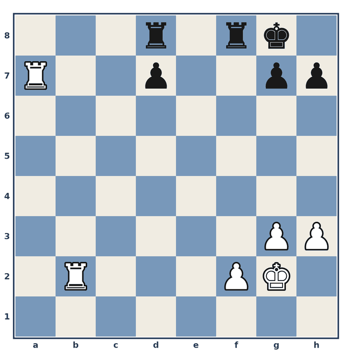
Position before 1.
1. ♖d2
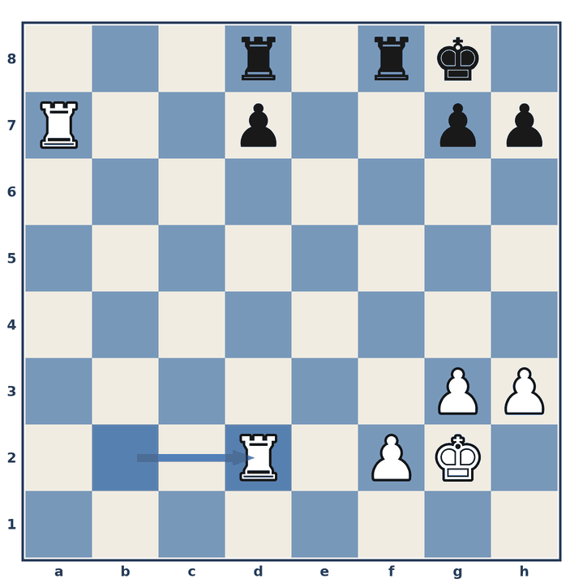
1… d6
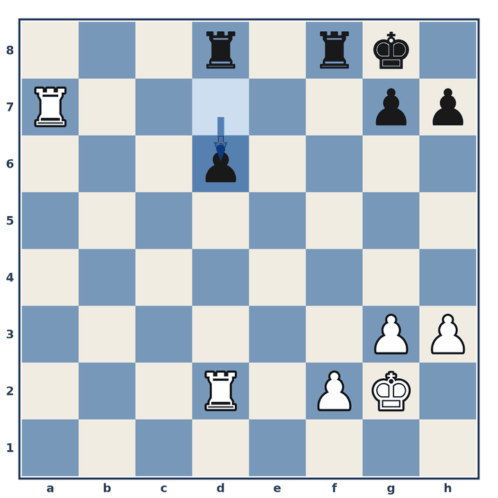
2. ♖a5
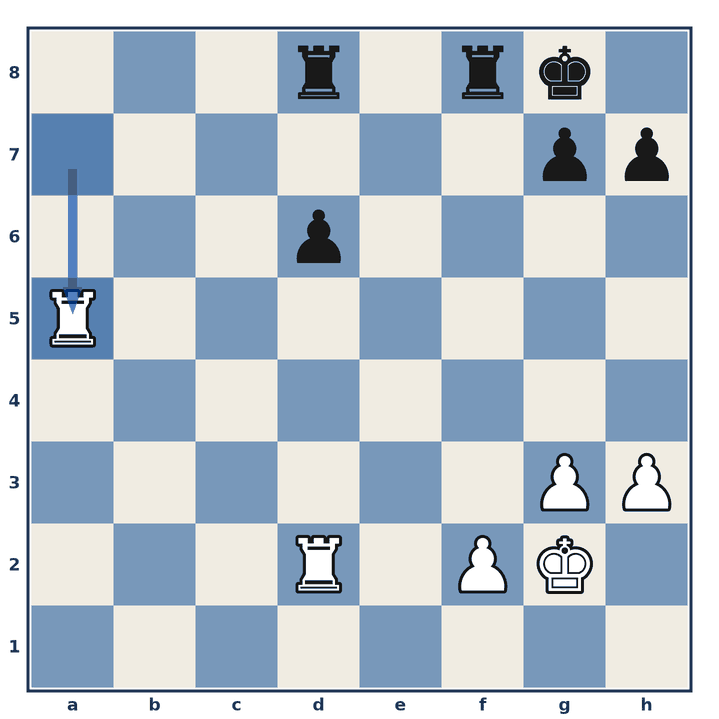
2… ♖f7
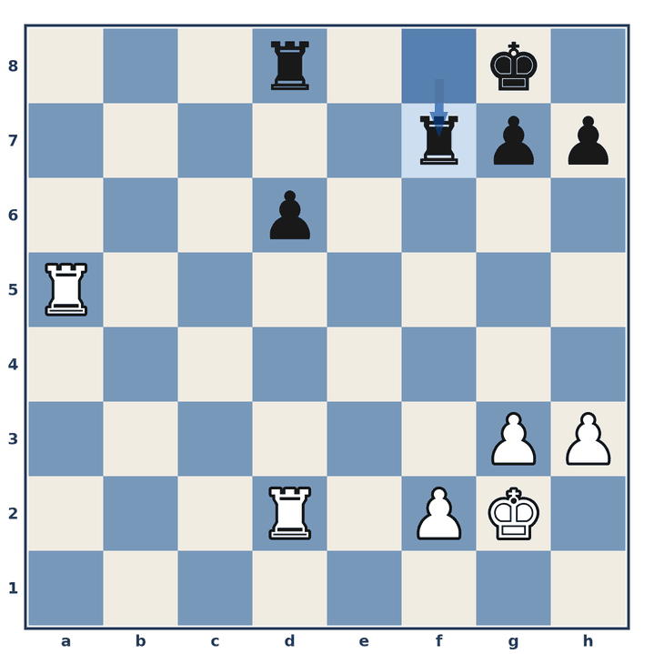
3. ♖ad5
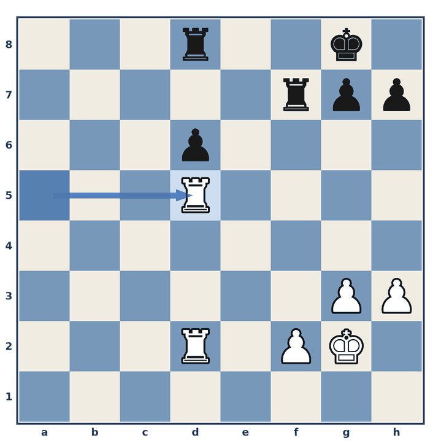
3… ♖fd7
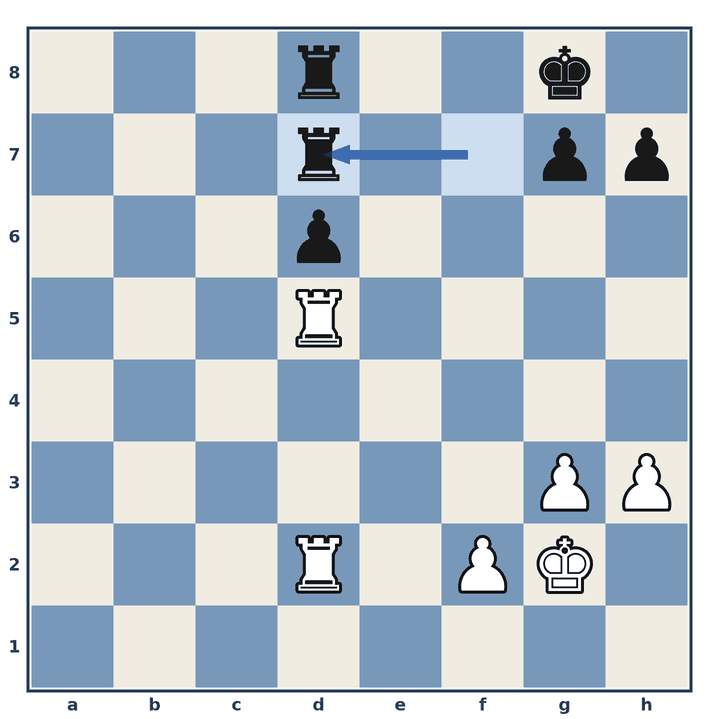
4. f4
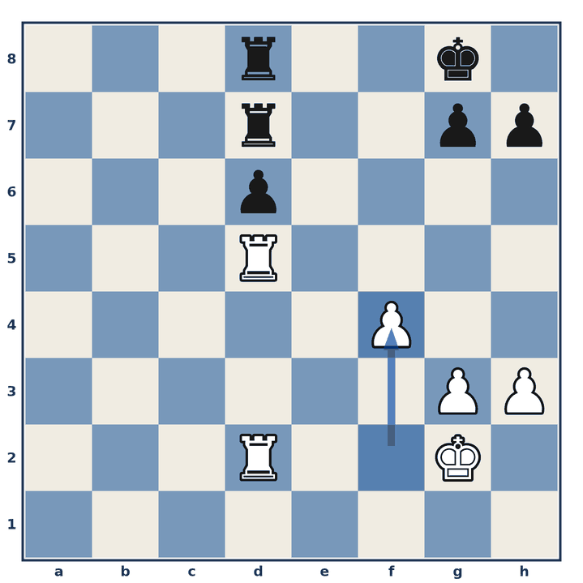
4… ♔f7
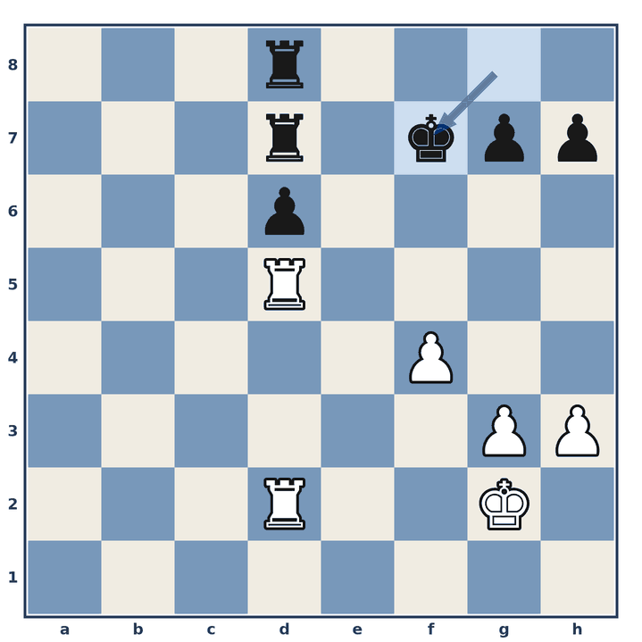
5. ♔f3
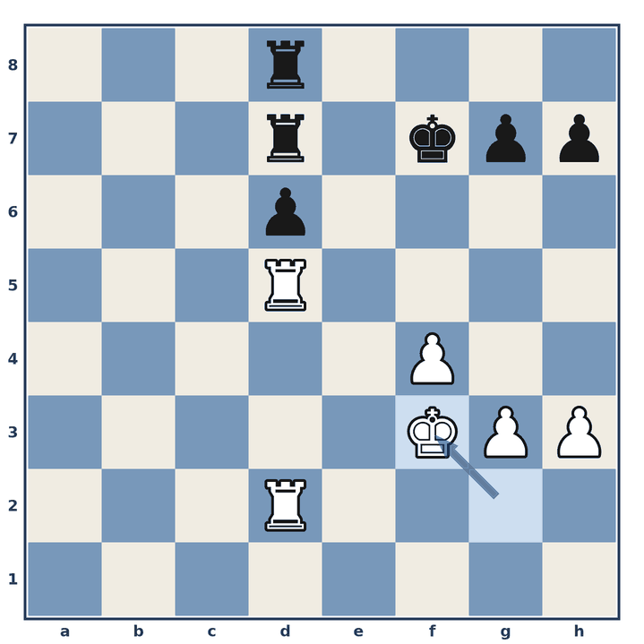
5… g6
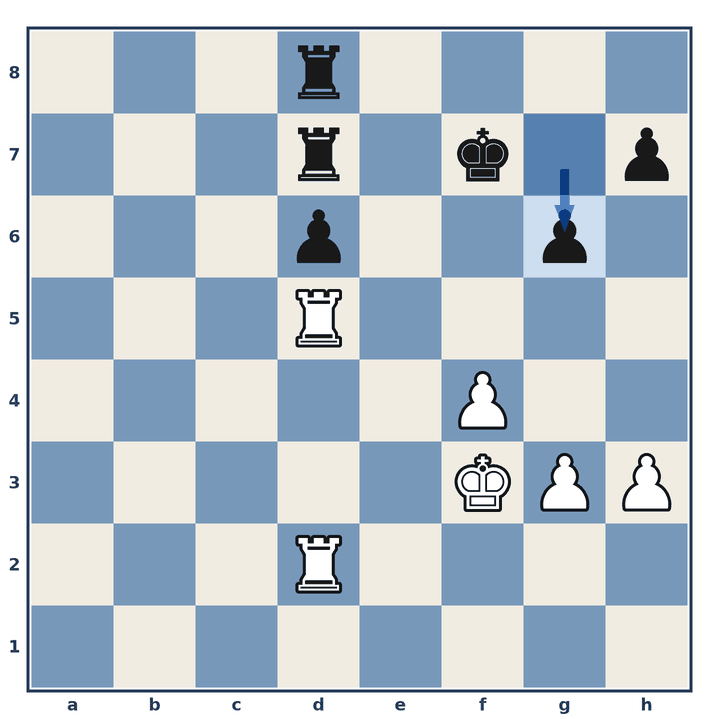
6. ♔g4
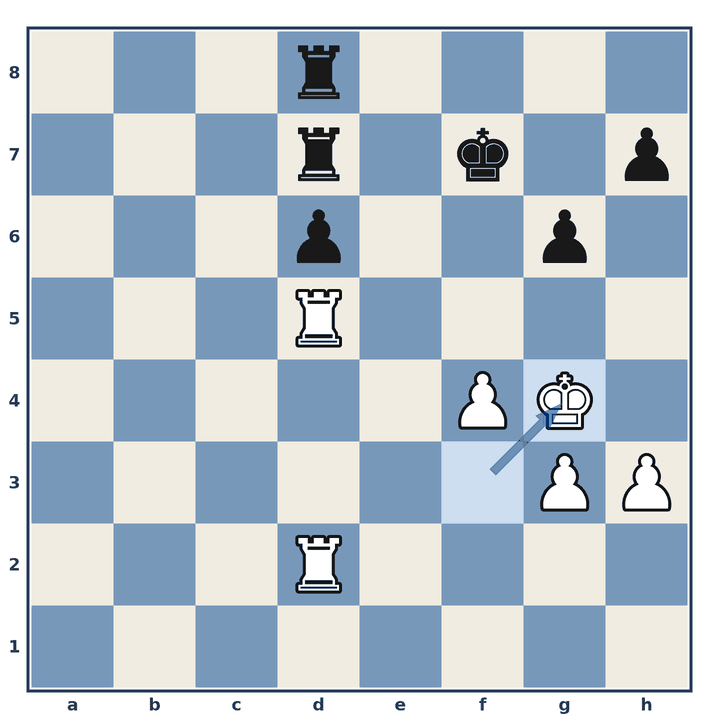
6… ♖c8
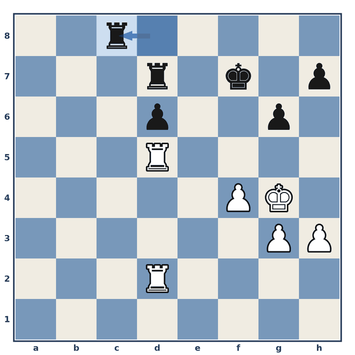
7. ♖xd6
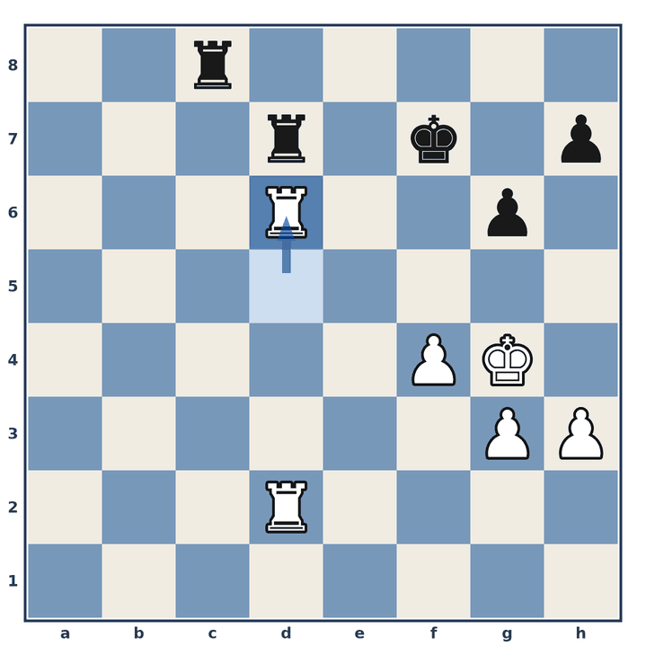
7… ♖xd6
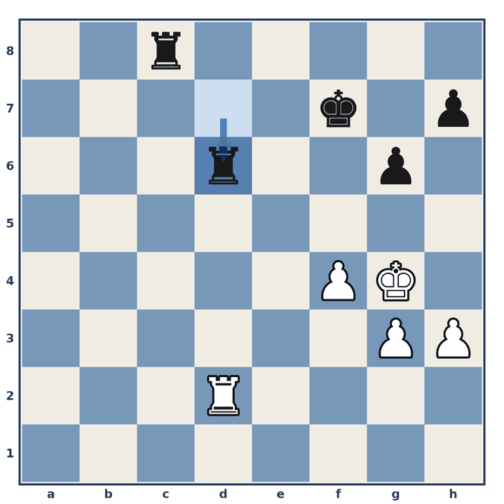
8. ♖xd6
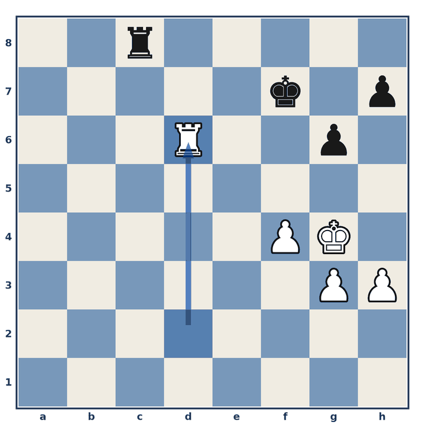
This is most likely a draw, but White is the only one with winning chances.